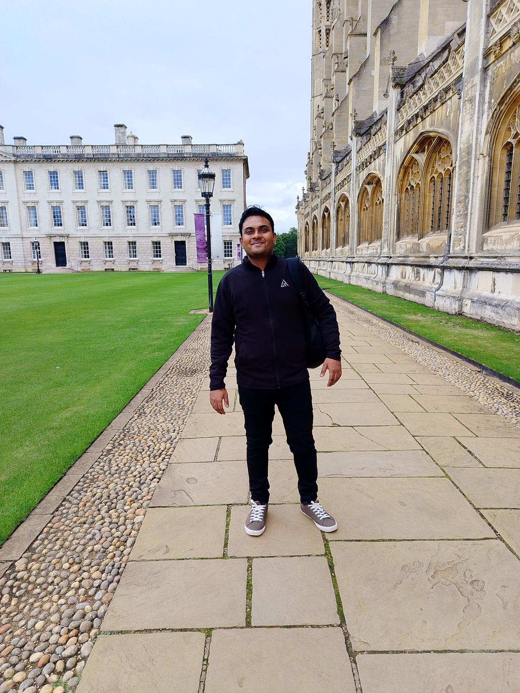
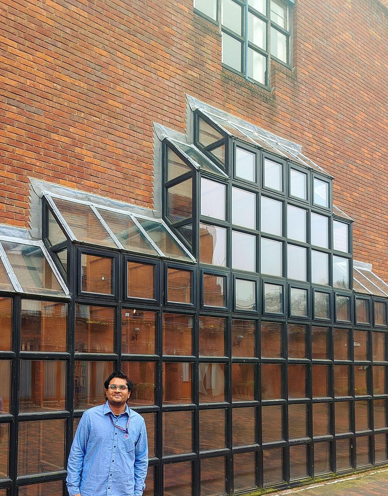
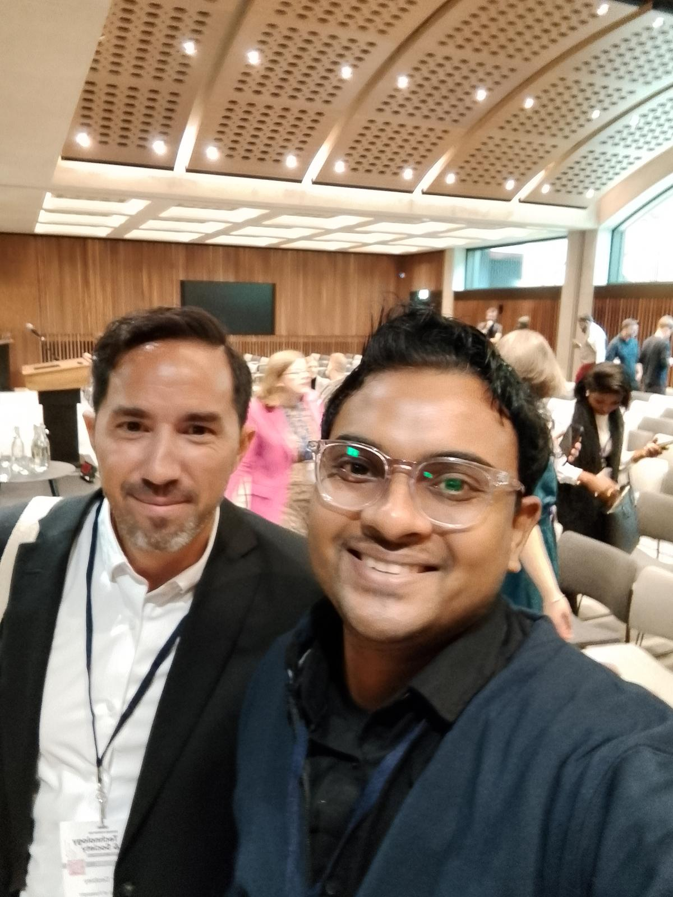
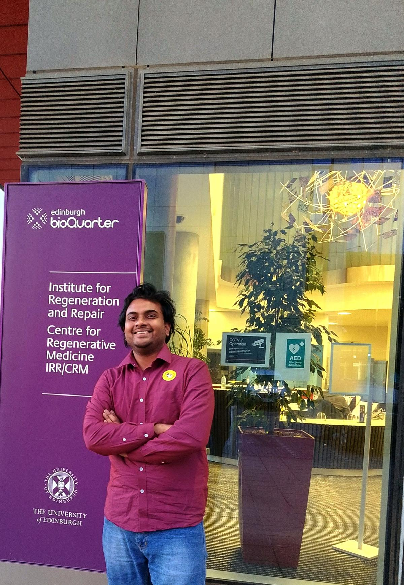
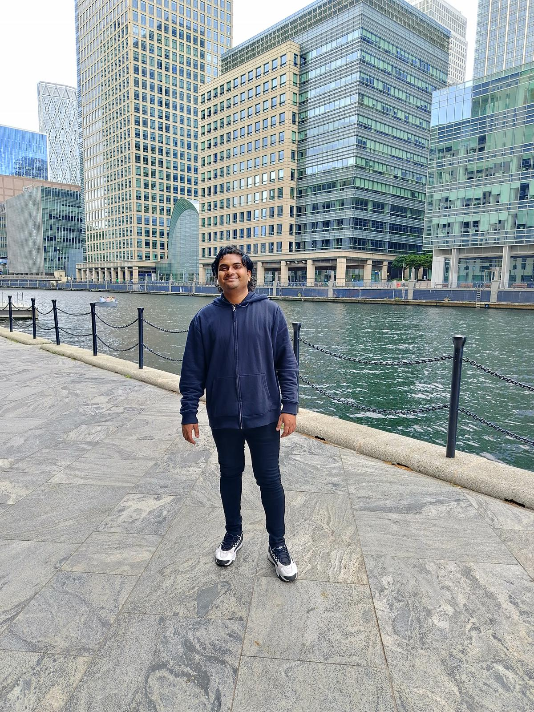
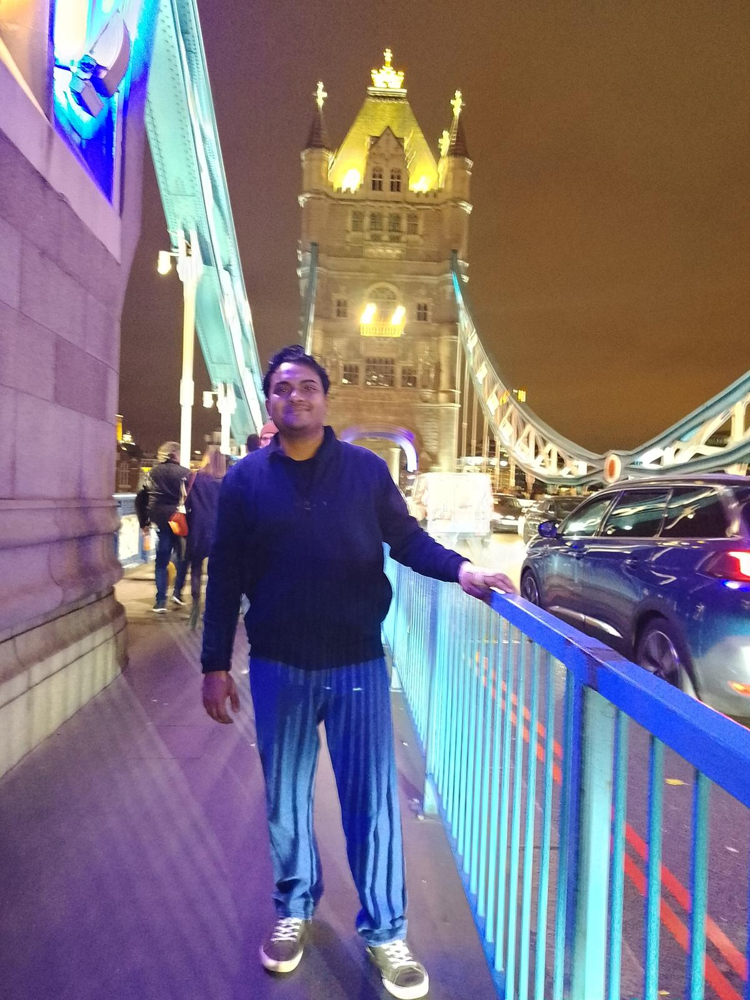
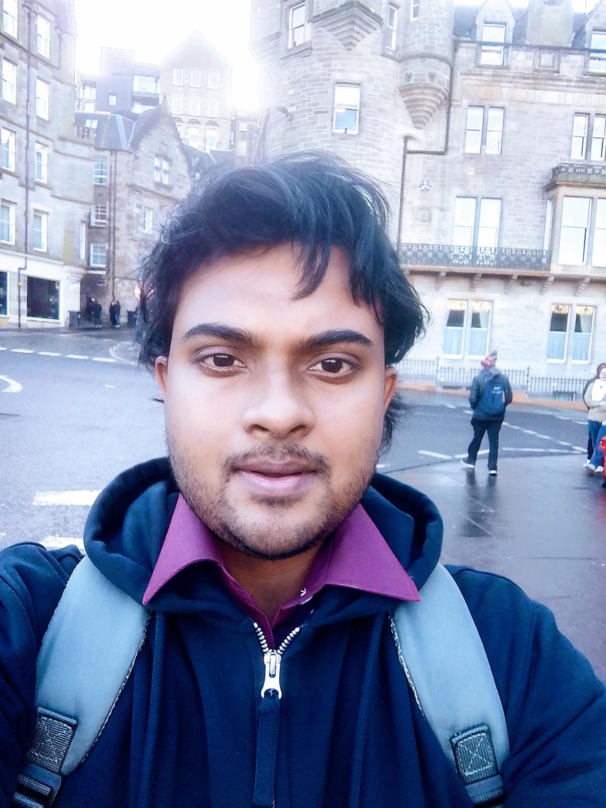

Cambridge University Conference
Balaga Raghuram at the University of Cambridge data analytics conference, September 2024. Research on machine learning and sustainable food systems.

Isaac Newton Institute, Cambridge
Raghuram Balaga at Cambridge's Isaac Newton Institute for Mathematical Sciences. Presenting ideas on mathematical formulations and heuristic solutions.

Oxford University Forum
Balaga Raghuram at the Oxford University Forum, November 2024. Global experts discussed foresight, innovation and interdisciplinary research.

Edinburgh Winter School
Balaga Raghuram at the funded Winter School, University of Edinburgh. Advanced programming, data science and AI with expert mentorship.
University of Birmingham
Raghuram Balaga during his MSc at the University of Birmingham. Distinction graduate in Mathematics, Operational Research, Statistics & Econometrics.

Canary Wharf, London
Balaga Raghuram at Canary Wharf, London. Exploring London's iconic financial district during his UK journey.

London Bridge at Night
Balaga Raghuram near London Bridge at night. The capital's skyline during his travels across the United Kingdom.

Edinburgh Early Morning
Early morning in Edinburgh, Scotland — Balaga Raghuram. Views across the historic city during the winter school programme.
UK Snow Experience
Balaga Raghuram experiencing a rare UK snowfall. Winter weather in the United Kingdom during his studies.
Zurich International Airport
Balaga Raghuram at Zurich International Airport, Switzerland. Travelling for academic conferences and research collaborations.